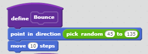
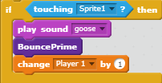
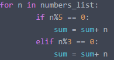
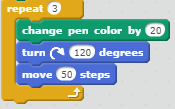
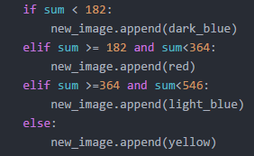
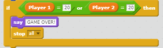

Core4 Values
Functions
A function is a section of code that you can use other commands to define, and it is a way to save space and make code more efficient.


A real-life analogy that can explain a function is giving something a set definition so you don't have to keep on defining it.
Variables
A variable is a section of code that records user input.


A real-life analogy that can explain a function is a scoreboard for a basketball game. Every time a shot is made, one team's or player's score increases by 1 and that score is saved as a variable.
Loops
A loop is a section of code that repeats certain commands or actions.


A real-life analogy that can explain a loop is a wheel that keeps on turning.
Conditionals
A conditional is a statement that causes outcomes to occur based on whether or not certain requirements are met.


A real-life analogy that can explain a conditional is height-requirements that people might have to meet to ride roller coasters at amusement parks.